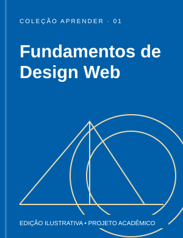

Tecnologia
Fundamentos de Design Web
Hierarquia visual, tipografia e composição para transformar ideias em páginas claras e consistentes.
Saiba mais sobre Fundamentos de Design Web
Para começar a estudar
Observe o contraste entre título e texto, defina uma escala tipográfica e organize o conteúdo antes de escolher os detalhes visuais.
Título e capa ilustrativos; não representam uma obra disponível no acervo real.